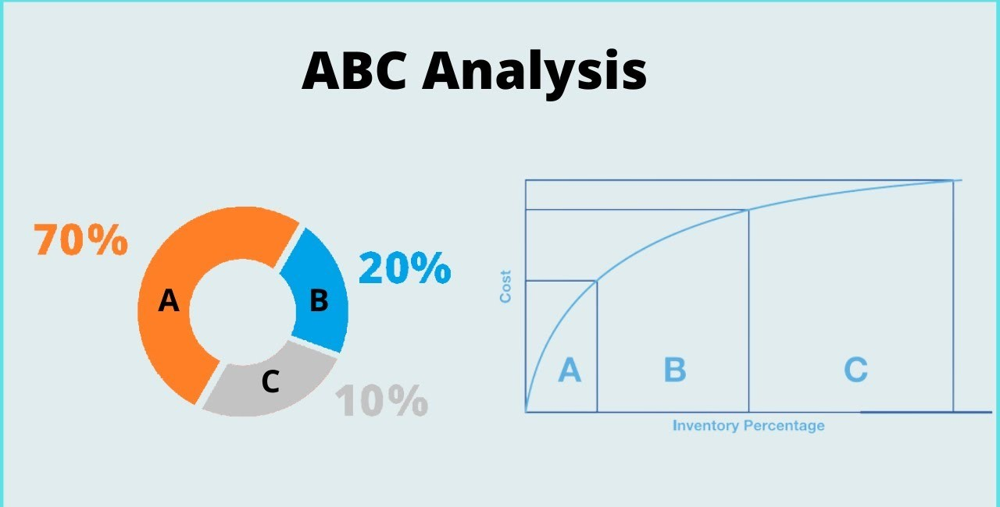
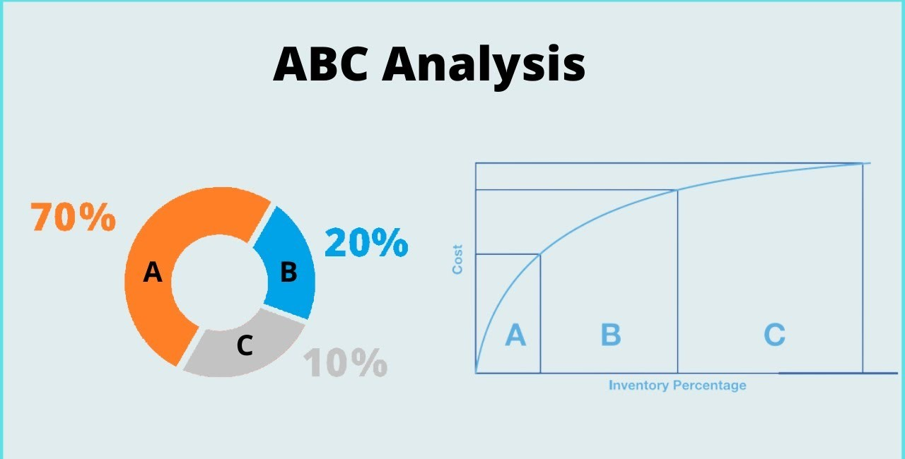

In this project, I did an exploratory data analysis on global cancer data obtained from Kaggle. I utilized Microsoft SQL Server to create queries and employed various skills including, joins, CTE's, temp tables, windows functions, aggregate functions, creating views, and converting data types.
 

In this project, I conducted an ABC analysis on PPC sales data sourced from Kaggle. Key Python libraries I employed include Pandas, NumPy, Matplotlib, and Seaborn.

In this project, I used Tableau to visualize e-commerce sales in the United States. The dashboard includes a comparison of e-commerce sales by state, a tree map of best selling products, and a bar chart depicting sales and profits for different product sub-categories by city.

In this project, I used Tableau to visualize beverage sales in the United States between December 2009 and November 2011. The dashboard features a map showing sales by region, a line graph illustrating sales over time, a bar chart depicting the most profitable products, and a scatter plot showing sales, profits and margins for distinct beverages.

In this project, I used Microsoft Power BI to create a dashboard from survey data. The visualization includes a tree map, a donut chart, a gauge, a stacked column chart, a clustered bar chart, and a card.